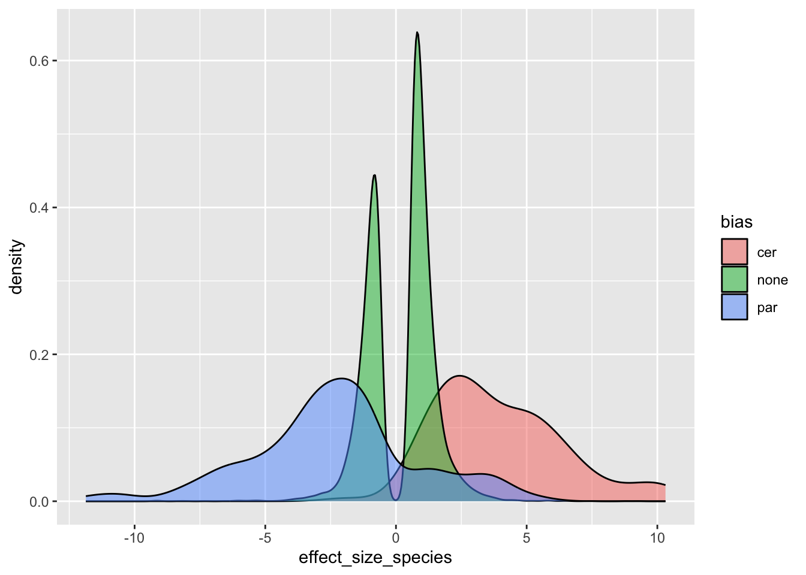
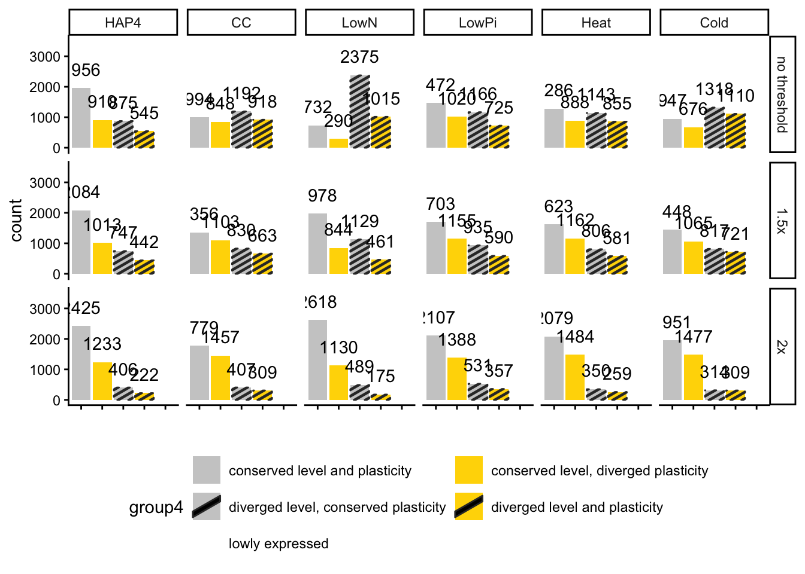

Final data cleaning steps that import level and plasticity divergence information from DESeq2 and Heiarchical clustering. The end result of this script is a dataframe, finaldf, that is used in all the figure scripts (also as Supplementary Table 1)
sapply(c("dplyr", "purrr", "tidyr", "ggpubr", "readr",
"data.table", "ggplot2", "data.table",
"matrixStats"), require, character.only=TRUE)## dplyr purrr tidyr ggpubr readr
## TRUE TRUE TRUE TRUE TRUE
## data.table ggplot2 data.table matrixStats
## TRUE TRUE TRUE TRUEsource("functions_for_figure_scripts.R")Defining our color schemes and category names to be used throughout the paper figures
# Environment Names, so I only have to change them in one place
ExperimentNames <- c("HAP4", "CC", "LowN", "LowPi", "Heat", "Cold")
LongExperimentNames <- c("Diauxic Shift", "Hydroxyurea Shock", "Low Nitrogen", "Low Phosphate", "Heat Stress", "Cold Stress")
# colors used throughout paper
group4_colordf <- tibble(type = c("grey80", "gold", "grey80", "gold", "grey20"),
labels = c("conserved level \nand plasticity",
"conserved level, \ndiverged plasticity",
"diverged level, \nconserved plasticity",
"diverged level \nand plasticity",
"lowly expressed"),
limits = c("conserved level and plasticity",
"conserved level, diverged plasticity",
"diverged level, conserved plasticity",
"diverged level and plasticity",
"lowly expressed"),
pattern = c("none", "none",
"stripe", "stripe",
"none"),
scheme = "group4")
experiment_colordf <- tibble(type = c("grey", "yellow", "green", "purple", "red", "blue"),
labels = LongExperimentNames,
limits = ExperimentNames,
scheme = "experiment")
plasticity_colordf <- tibble(type = c("grey80", "grey60", "orange1", "blue2", "purple"),
labels = c("conserved plastic", "conserved static", "Scer-unique plasticity", "Spar-unique plasticity", "plasticity reversal"),
limits = c("conserved plastic", "conserved static", "Scer-unique", "Spar-unique", "reversal"),
scheme = "plasticity")
colordf <- bind_rows(group4_colordf, experiment_colordf, plasticity_colordf)Loading heiarchical clustering and DESeq2 model outputs:
load("data_files/CorrelationClustering3Disp.RData")
load("data_files/single_gene_models.RData")
load("data_files/Cleaned_Count_Data.RData")
load("data_files/Cleaned_Counts.RData")
load("data_files/Cleaned_Counts_Allele.RData")
p_thresh <- 0.05
eff_thresh <- log2(1.5) # gene needs to be 1.5x higher in one species than the other to be considered DE
eff_thresh0 <- 0
eff_thresh2 <- log2(2)Benjamini-Hochberg FDR correction:
# Benjamini-Hochberg FDR correction of glm p-values
spaldf$padj <- p.adjust(spaldf$pvalue, method = "BH")
sum(spaldf$pvalue < p_thresh)## [1] 25607sum(spaldf$padj < p_thresh)## [1] 22628Creating mutually exclusive sets of genes based on level and plasticity divergence in parents each gene is a combination of its level category and its plasticity category ## level categories: 1) conserved: parent padj >= p_thresh 2) diverged: parent padj < p_thresh, not taking into account hybrid yet ## plasticity categories (just looking at parents): 1) conserved: 11, 22, 00 2) diverged: 12, 21, 01, 10, 02, 20
finaldf <- pivot_wider(spaldf, id_cols = c("gene_name", "experiment"),
values_from = c("effect_size", "padj"),
names_from = "coefficient") |>
drop_na() |> # 1 gene missing from species, YMR107W
inner_join(y = clusterdf,
by = join_by("gene_name"=="gene_ID",
"experiment"))
### Removing hybrid par allele-deleted genes from CC experiment (where the deletion was present)
omit_list <- c("YLR078C", "YLR077W", "YLR074C", "YLR072W", "YLR075W", "YLR073C", # large hybrid CC paradoxus haplotype deletion
"YNL247W", "YNL244C")
finaldf |> filter(experiment == "CC" & gene_name %in% omit_list)| gene_name | experiment | effect_size_allele | effect_size_species | padj_allele | padj_species | cer | par |
|---|---|---|---|---|---|---|---|
| YLR072W | CC | 8.76 | -0.0546 | 1.19e-27 | 0.827 | 1 | 1 |
| YLR073C | CC | 9.16 | 0.424 | 2.6e-16 | 0.382 | 1 | 1 |
| YLR074C | CC | 9.85 | -0.0309 | 4.67e-40 | 0.897 | 2 | 1 |
| YLR075W | CC | 8.26 | -0.469 | 5.33e-139 | 5.87e-09 | 2 | 2 |
| YLR077W | CC | 42.4 | 0.93 | 1 | 1e-06 | 0 | 1 |
| YLR078C | CC | 42.9 | 0.469 | 1 | 0.0424 | 1 | 1 |
| YNL247W | CC | 12 | 0.429 | 4.31e-30 | 0.000508 | 2 | 2 |
| YNL244C | CC | 8.7 | -0.717 | 1.81e-186 | 3.58e-17 | 2 | 2 |
dim(finaldf)## [1] 25264 8finaldf <- finaldf |> filter(!(experiment == "CC" & gene_name %in% omit_list))
dim(finaldf)## [1] 25256 8Adding plasticity column. If cluster in Scer is the same as cluster in Spar, plasticity is conserved. If clusters are different, plasticity is diverged.
finaldf$plasticity <- map2(finaldf$cer, finaldf$par, \(x, y) {
if (x == y) {
return("conserved")
}
if (x != y) {
return("diverged")
}
}) |> unlist()Adding level column. If the DEseq2-estimated log2 fold change when you change from an Spar count to an Scer count (Spar is reference) is greater (in magnitude) than the log2 fold change threshold (eff_thresh) and the BH-adjusted p-value is less than 0.05, the gene is considered diverged in level. Using three different log2 fold change thresholds to compare the effect in a Supplemental figure.
finaldf$level <- map(c(1:nrow(finaldf)), \(i) {
x <- finaldf$padj_species[i] |> as.numeric()
y <- finaldf$effect_size_species[i] |> as.numeric()
output <- if_else(x < p_thresh & abs(y) > eff_thresh,
true = "diverged",
false = "conserved")
return(output)
}) |> unlist()
finaldf$level0 <- map(c(1:nrow(finaldf)), \(i) {
x <- finaldf$padj_species[i] |> as.numeric()
y <- finaldf$effect_size_species[i] |> as.numeric()
output <- if_else(x < p_thresh & abs(y) > eff_thresh0,
true = "diverged",
false = "conserved")
return(output)
}) |> unlist()
finaldf$level2 <- map(c(1:nrow(finaldf)), \(i) {
x <- finaldf$padj_species[i] |> as.numeric()
y <- finaldf$effect_size_species[i] |> as.numeric()
output <- if_else(x < p_thresh & abs(y) > eff_thresh2,
true = "diverged",
false = "conserved")
return(output)
}) |> unlist()Tables of gene counts to report in main paper:
# gene counts to report
table(finaldf$plasticity, finaldf$level, useNA = "always") # checking that all observations are in the 2x2 box##
## conserved diverged <NA>
## conserved 10020 5436 0
## diverged 6244 3556 0
## <NA> 0 0 0sum(table(finaldf$level, finaldf$plasticity))## [1] 25256nrow(finaldf) # mutually exclusive group categories## [1] 25256finaldf |> filter(plasticity == "diverged") |> select(experiment) |> table()## experiment
## CC Cold HAP4 Heat LowN LowPi
## 1766 1786 1455 1743 1305 1745finaldf |> filter(level == "diverged") |> select(experiment) |> table()## experiment
## CC Cold HAP4 Heat LowN LowPi
## 1532 1563 1238 1415 1657 1587Tables of number of timepoints per experiment for paper figure:
sample_info |> select(experiment, time_point_str) |>
unique() |>
group_by(experiment) |>
summarise(n = n())| experiment | n |
|---|---|
| CC | 8 |
| Cold | 4 |
| HAP4 | 15 |
| Heat | 4 |
| LowN | 3 |
| LowPi | 28 |
Calculating ortholog pair correlations for EnvironmentalPatterns figure
# between hybrid alleles and for parent-hybrid allele of the same species (Hyc/Scer and Hyp/Spar)
getCorelation <- function(.gene_name, .experiment,
.cts1, .cts2, .info1, .info2) {
common_cols <- intersect(colnames(.cts1[,.info1$experiment == .experiment]),
colnames(.cts2[,.info2$experiment == .experiment]))
output <- cor(as.numeric(.cts1[.gene_name, common_cols]),
as.numeric(.cts2[.gene_name, common_cols]))
return(as.numeric(output))
}
# tests for getCorelation
getCorelation("YGR192C", "HAP4",
.cts1 = collapsed$cer,
.cts2 = collapsed_allele$cer,
.info1 = info,
.info2 = info_allele)## [1] 0.9640884Adding correlation columns:
# adding correlation columns
finaldf$cor_hybrid <- map2(finaldf$gene_name, finaldf$experiment, getCorelation,
.cts1 = collapsed_allele$cer,
.cts2 = collapsed_allele$par,
.info1 = info_allele,
.info2 = info_allele) |> unlist()
finaldf$cor_parents <- map2(finaldf$gene_name, finaldf$experiment, getCorelation,
.cts1 = collapsed$cer,
.cts2 = collapsed$par,
.info1 = info,
.info2 = info) |> unlist()
finaldf$cor_scer <- map2(finaldf$gene_name, finaldf$experiment, getCorelation,
.cts1 = collapsed_allele$cer,
.cts2 = collapsed$cer,
.info1 = info_allele,
.info2 = info) |> unlist()
finaldf$cor_spar <- map2(finaldf$gene_name, finaldf$experiment, getCorelation,
.cts1 = collapsed_allele$par,
.cts2 = collapsed$par,
.info1 = info_allele,
.info2 = info) |> unlist()Calculating the mean and var of each gene’s expression across both species, which is mainly relevant in a couple Supplemental/QC plots
mean:
getMean <- function(.gene_name, .experiment,
.cts, .info) {
output <- rowMeans(.cts[.gene_name, .info$experiment == .experiment, drop = FALSE])
return(as.numeric(output))
}
# tests for getMean
getMean("YGR192C", "HAP4",
.cts = counts,
.info = sample_info)## [1] 9339.933var:
getVar <- function(.gene_name, .experiment,
.cts, .info) {
output <- rowVars(.cts[.gene_name, .info$experiment == .experiment, drop = FALSE])
return(as.numeric(output))
}
# tests for getVar
getVar("YGR192C", "HAP4",
.cts = counts,
.info = sample_info)## [1] 67159939calculating for each gene (including both parent’s counts):
# adding mean&var columns
finaldf$mean_parents <- map2(finaldf$gene_name, finaldf$experiment, getMean,
.cts = counts,
.info = sample_info) |> unlist()
finaldf$var_parents <- map2(finaldf$gene_name, finaldf$experiment, getVar,
.cts = counts,
.info = sample_info) |> unlist()Remember those biased genes we identified in the very first importing count data script? These were genes that had a high proportion of counts mapping to the wrong species allele. They become relevant here. We re-label any gene that has been flagged as diverged in level as “biased” instead of “diverged”
finaldf <- finaldf |> mutate(bias = if_else(gene_name %in% cer_biased_genes,
true = "cer",
false = if_else(gene_name %in% par_biased_genes,
true = "par",
false = if_else(gene_name %in% both_biased_genes,
true = "both",
false = "none"))))
plotdf <- finaldf |>
filter(level == "diverged")
# effect of bias on level divergence
ggplot(plotdf, aes(x = effect_size_species)) +
geom_density(aes(fill = bias), alpha = 0.5) 
Re-labeling these biased genes:
finaldf$level <- if_else(finaldf$bias == "none",
true = finaldf$level,
false = "biased")
# effect of bias on plasticity divergence
p_none <- plotdf |> filter(bias == "none") |>
select(cer, par) |> table()
p_cer <- plotdf |> filter(bias == "cer") |>
select(cer, par) |> table()
p_par <- plotdf |> filter(bias == "par") |>
select(cer, par) |> table()
round(p_none/sum(p_none), digits = 2)## par
## cer 0 1 2
## 0 0.10 0.08 0.02
## 1 0.10 0.38 0.05
## 2 0.05 0.09 0.13round(p_cer/sum(p_cer), digits = 2)## par
## cer 0 1 2
## 0 0.05 0.01 0.03
## 1 0.15 0.59 0.05
## 2 0.06 0.03 0.03round(p_par/sum(p_par), digits = 2)## par
## cer 0 1 2
## 0 0.03 0.13 0.09
## 1 0.04 0.52 0.08
## 2 0.02 0.03 0.07# proportions are the same between the three groupsNumbers for the workflow figure:
### numbers for workflow figure
nrow(finaldf) # for workflow figure E## [1] 25256length(unique(finaldf$gene_name)) # total number of genes## [1] 4863n_per_experiment <- table(finaldf$experiment)
n_per_experiment # number of genes used in each environment (number expressed > 30cpm)##
## CC Cold HAP4 Heat LowN LowPi
## 3952 4051 4286 4172 4412 4383# min filtered out for low expression:
max(n_per_experiment)## [1] 4412(nrow(genedf) - max(n_per_experiment))/nrow(genedf)## [1] 0.09274111# max filtered out for low expression:
min(n_per_experiment)## [1] 3952(nrow(genedf) - min(n_per_experiment))/nrow(genedf)## [1] 0.1873329# percent low variance per experiment:
finaldf |> group_by(experiment) |>
summarise(n_cer_lowvar = sum(cer == 0),
n_par_lowvar = sum(par == 0),
n_genes = n()*2) |>
mutate(pct_low_var = (n_cer_lowvar + n_par_lowvar)/n_genes)| experiment | n_cer_lowvar | n_par_lowvar | n_genes | pct_low_var |
|---|---|---|---|---|
| CC | 315 | 617 | 7.9e+03 | 0.118 |
| Cold | 1585 | 2148 | 8.1e+03 | 0.461 |
| HAP4 | 971 | 850 | 8.57e+03 | 0.212 |
| Heat | 833 | 1207 | 8.34e+03 | 0.244 |
| LowN | 1300 | 1196 | 8.82e+03 | 0.283 |
| LowPi | 372 | 253 | 8.77e+03 | 0.0713 |
This is slightly sacrilegious to put a figure plot in this data-cleaning script. But it is easier than having a separate script just for this figure. Here we compare how the three different effect size thresholds affect the number of genes considered to be diverging in expression level.
# for testing how eff_threshold affects level divergence
finaldf <- finaldf |> pivot_longer(cols = c("level0", "level", "level2"),
names_to = "eff_threshold",
values_to = "level")
### Barplot of 4 divergence categories
finaldf$group4 <- map2(finaldf$level, finaldf$plasticity, \(l, d) {
if (l != "diverged" & d == "conserved") {
return("conserved level and plasticity")
}
if (l != "diverged" & d == "diverged") {
return("conserved level, diverged plasticity")
}
if (l == "diverged" & d == "conserved") {
return("diverged level, conserved plasticity")
}
if (l == "diverged" & d == "diverged") {
return("diverged level and plasticity")
}
}) |> unlist()
plotdf <- finaldf
plotdf$eff_threshold <- factor(plotdf$eff_threshold, levels = c("level0", "level", "level2"),
labels = c("no threshold", "1.5x", "2x"))
p <- ggplot(mutate(plotdf, experiment = factor(experiment,
levels = ExperimentNames)),
aes(x = group4)) +
geom_bar_pattern(aes(fill = group4, pattern = group4), pattern_fill = "black") +
geom_text(stat='count', aes(label = after_stat(count)), vjust=-1) +
scale_fill_discrete(limits = colordf[colordf$scheme == "group4",]$limits,
type = colordf[colordf$scheme == "group4",]$type) +
scale_pattern_discrete(limits = colordf[colordf$scheme == "group4",]$limits,
choices = colordf[colordf$scheme == "group4",]$pattern) +
scale_x_discrete(limits = colordf[colordf$scheme == "group4",]$limits,
breaks = colordf[colordf$scheme == "group4",]$limits,
labels = colordf[colordf$scheme == "group4",]$labels) +
theme_classic() +
theme(axis.text.x = element_blank(),
legend.position = "bottom") +
xlab("") +
ylim(c(0, 3500)) +
facet_grid(eff_threshold ~ experiment) +
guides(fill = guide_legend(nrow = 3, byrow=TRUE))
p
pdf("paper_figures/Supplement/bar.pdf",
width = 11, height = 5)
p
dev.off()## quartz_off_screen
## 2Removing level thresholds that we don’t use, just keeping the 1.5 threshold
# removing effect size threshold we don't use
finaldf <- filter(finaldf, eff_threshold == "level") |>
select(-eff_threshold)I am 99% sure these group codes are no longer used in any of the figure scripts, but keeping them in just in case. These incorporate all the level and plasticiy divergence information from the other columns into one column The idea was that these codes might effectively group certain types of genes together more than the individual properties. As we discovered in the course of the analyses of the paper, however, level and plasticity divergence do not have any relationship with each other, and the types of plasticity divergence observed tended to have more to do with the environment than the particular genes that had that divergence pattern.
### longer group codes
# gene groups factor in a) whether level is conserved, b) whether dynamics are conserved,
# and c) if level or dynamics are diverged, which direction that is happening in (i.e. up in Scer, or 2 in Scer and 1 in Spar)
# group code format: type_direction_cluster(s)
# type: <cons, lev, dyn, or levdyn>
# direction (of level divergence): <uppar, upcer, or empty>
# clusters: <0, 1, 2, 01, 02, etc.>
finaldf$group <- apply(finaldf, 1, \(x) {
x_cer <- x["cer"] |> as.numeric()
x_par <- x["par"] |> as.numeric()
x_effect_size <- x["effect_size_species"] |> as.numeric()
x_level <- x["level"] |> as.character()
x_plasticity <- x["plasticity"] |> as.character()
if (x_level != "diverged" & x_plasticity == "conserved") {
type_str <- "cons"
}
if (x_level == "diverged" & x_plasticity == "conserved") {
type_str <- "lev"
}
if (x_level != "diverged" & x_plasticity == "diverged") {
type_str <- "dyn"
}
if (x_level == "diverged" & x_plasticity == "diverged") {
type_str <- "levdyn"
}
if (x_level != "diverged") {
dir_str <- NULL
}
if (x_level == "diverged") {
if (x_effect_size > 0) {
dir_str <- "upcer"
}
if (x_effect_size < 0) {
dir_str <- "uppar"
}
}
if (identical(x_cer, x_par)) {
full_str <- paste0(type_str, dir_str, x_cer)
}
if (!identical(x_cer, x_par)) {
full_str <- paste0(type_str, dir_str, x_cer, x_par)
}
return(full_str)
}) |> unlist()save(finaldf, colordf, ExperimentNames,
LongExperimentNames, file = "data_files/FinalDataframe3Disp.RData")Renaming some column names and selecting specific finaldf columns for the supplementary table, so that it appears as close to the workflow figure as possible
supp_tab1 <- finaldf |> select(gene_name, experiment, effect_size_species, padj_species, cer, par, level, plasticity) |>
dplyr::rename(c("gene"="gene_name", "log2_fold_change"="effect_size_species",
"padj"="padj_species", "cluster_Scer"="cer", "cluster_Spar"="par"))
# changing cluster names for clarity
# 0 = "static"
# 1 = "increasing"
# 2 = "decreasing"
supp_tab1$cluster_Scer <-
if_else(supp_tab1$cluster_Scer == 0,
true = "static",
false = if_else(supp_tab1$cluster_Scer == 1,
true = "increasing",
false = "decreasing"))
supp_tab1$cluster_Spar <-
if_else(supp_tab1$cluster_Spar == 0,
true = "static",
false = if_else(supp_tab1$cluster_Spar == 1,
true = "increasing",
false = "decreasing"))
write_delim(supp_tab1, delim = ",", file = "data_files/Supplementary_Table1.csv",
col_names = TRUE)Creating a GOslim table recording all the gene ontology terms associated with each gene (filtering out a few terms that are a little too vague to be useful, such as “cellular process”).
# table of gene ontology terms associated with each gene
# each row is a term, so this is a very long table
goslim <- read.table("data_files/downloaded_genomes_and_features/go_slim_mapping.tab", header = FALSE, sep = "\t") |>
as_tibble()
colnames(goslim) <- c("ORF", # (mandatory) - Systematic name of the gene (or gene complex if it starts with CPX-)
"gene", # (optional) - Gene name, if one exists
"SGDID", # SGDID (mandatory) - the SGDID, unique database identifier for the gene
"GO_aspect", # (mandatory) - which ontology: P=Process, F=Function, C=Component
"GOslim_term", # (mandatory) - the name of the GO term that was selected as a GO Slim term
"GOID", # (optional) - the unique numerical identifier of the GO term
"feature_type") # (mandatory) - a description of the sequence feature, such as ORF or tRNA
too_vague_terms <- c("cellular process", "molecular function", "biological process")
goslim <- filter(goslim, !(GOslim_term %in% too_vague_terms) &
(ORF %in% finaldf$gene_name))
save(goslim, file = "data_files/GO_Slim.RData")